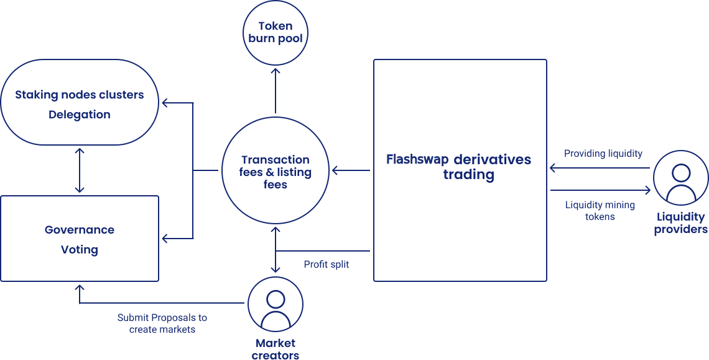

The Flashswap token is used for staking and delegation on the proof of stake network and to paricipate in on-chain governance
- Staking
- Tokens can be staked by node operators to participate in consensus and receive a share of revenue.
- Holders who are not running validator nodes can delegate tokens to node operators and receive fee revenue.
- Governance
- Approving and rejecting proposed markets.
- On-chain governance will be used to update network parameters and enable new features and risk model updates.
- Liquidity provision
- Liquidity providers will be rewarded tokens for providing liquidity. The incentive mechanism is based on platform macro liquidity and liquidity of the specific pool. Liquidity rewards will be distributed weekly starting from platform launch.
Economics structure
